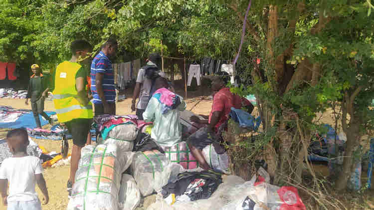
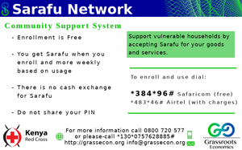
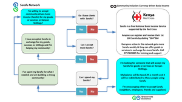

Kilifi Kenya - a hub for Community Driven Basic Income
The current reality is that following Covid-19 many have fallen deeper and deeper into debt. However, most individuals would still not openly disclose this reality to avoid the negative connotation that comes with owing. Imagine a world where household debt is no longer an individual burden, but rather a tool to build a strong local economy? Instead of waiting for Kenyan Shillings from the government or donors, basic income programs built via community currencies like Sarafu are communalizing and trading debt to reduce poverty. A perfect example of this is the diverse and welcoming population of Kilifi, who have begun to accept a basic income (locally called Sarafu) for goods and services, as a way of reverting the loss they would have incurred through stagnate loans and markets.

Residents of Kilifi like Kimmy Katana above at Red House, are accepting their role in driving economic change by embracing a different outlook to financial freedom.
The implementation of a basic income program in Kilifi, as developed by Grassroots Economics and supported by the Kenya Red Cross Society (KRCS), helps ''Kilifians'' choose to collectively curb the issue of prolonged debt amongst the vulnerable in the community. Thanks to the local sub-chief, Mr. Tony Tuva, the program exists as hope for a better future by empowering communities to build prospering economies.
What Sarafu means for me…

When a Kilfi resident, like Pascaline Wanjiku, accepts to receive Sarafu, she offers her customers a way out of debt. This means that rather than continuing my debt streak, I get an opportunity to clear my existing debt with the Kenya shillings I save when I purchase her bed sheets using Sarafu. Apart from helping the community, a user like Jesse Komora (a boda boda) accepting Sarafu from Pascaline for a ride then re-spending it to buy a shirt, is ensuring circulation continues rather than stagnation of debt and local markets.
Market Days
Kilifians come to weekly Sarafu market days to sell goods and services using basic income (Sarafu ya Jamii). One such market happens at Mnarani Chief’s office behind MTG grounds each Sunday and is an ideal place to meet other people who believe in community driven basic income. This is an opportunity to buy and sell with Sarafu to support yourself and the economy while exploring your social-entrepreneurial spirit.
 Anyone can receive a basic income in Sarafu by dialing 384*96# or call 0757628885 for more information. **This national service is free and available to all Kenyans thanks to the Red Cross*. Kilifians who don’t need a basic income, often support others by giving theirs to those in need and accepting it for goods and services or in place of debt.
While these are the early days of Kilifi embracing a basic income it is wonderful to be part of such a vibrant and diverse community!
Follow the flow ...
